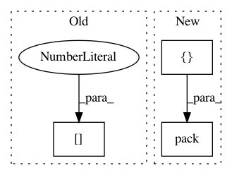

41fa0902ddf895045b0a109852d9b2f724e1d808,GPflow/kernels.py,Bias,K,#Bias#Any#Any#,58
Before Change
if X2 is None:
return self.variance * tf.ones((X.shape[0], X.shape[0]), tf.float64)
else:
return self.variance * tf.ones((X.shape[0], X2.shape[0]), tf.float64)
class Stationary(Kern):
After Change
if X2 is None:
return self.variance * tf.ones(tf.pack([tf.shape(X)[0], tf.shape(X)[0]]), tf.float64)
else:
return self.variance * tf.ones(tf.pack([tf.shape(X)[0], tf.shape(X2)[0]]), tf.float64)
class Stationary(Kern):
In pattern: SUPERPATTERN
Frequency: 3
Non-data size: 3
Instances
Project Name: GPflow/GPflow
Commit Name: 41fa0902ddf895045b0a109852d9b2f724e1d808
Time: 2016-01-14
Author: james.hensman@gmail.com
File Name: GPflow/kernels.py
Class Name: Bias
Method Name: K
Project Name: GPflow/GPflow
Commit Name: 41fa0902ddf895045b0a109852d9b2f724e1d808
Time: 2016-01-14
Author: james.hensman@gmail.com
File Name: GPflow/kernels.py
Class Name: White
Method Name: K
Project Name: keras-team/keras
Commit Name: 0b04ac3117e44e9fcc0222b479a34048171462a7
Time: 2016-09-19
Author: francois.chollet@gmail.com
File Name: keras/backend/tensorflow_backend.py
Class Name:
Method Name: rnn